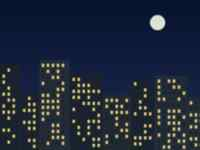
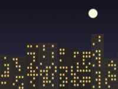
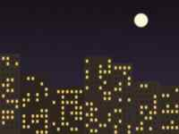
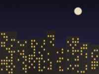

NASHI TACHKI / OUR CARS

Ruslan_NZ — VAZ 2109 "Chernaya Strela"Black matt, lowered 60 mm, tinted 5%, 16" wheels, spoiler from 2110, neon blue under. Engine 1.5 + carburetor tuning (+10 hp, I think). Sound: Pioneer + 2 x 12".

Timur — VAZ 2109 "Basik"Silver, 4 subwoofers Kicker, 2000 W. The car is a speaker with wheels. Winner of the "sound" at the Night of Lights.

Dima K. — Toyota Mark II (1993)Right-hand drive from Bishkek bazaar. Original, only exhaust and wheels. The king.

Sanzhar — VAZ 2106Grandfather's six, 1985. Red, chrome, "classic tuning". Works on prayers.